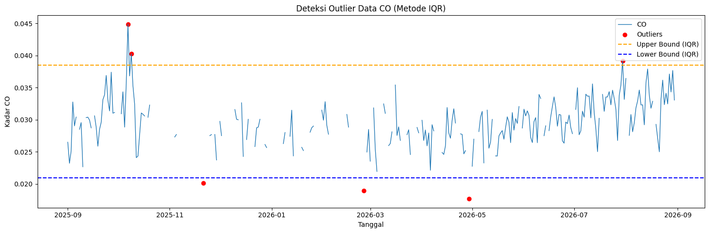
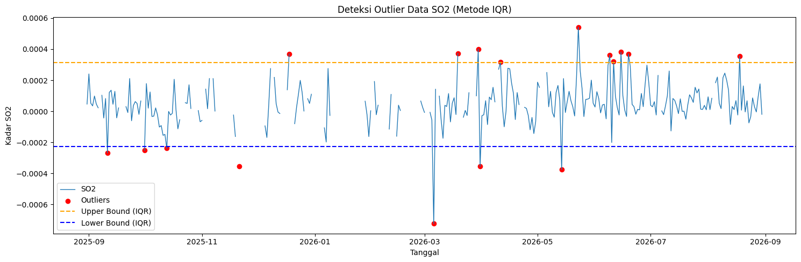
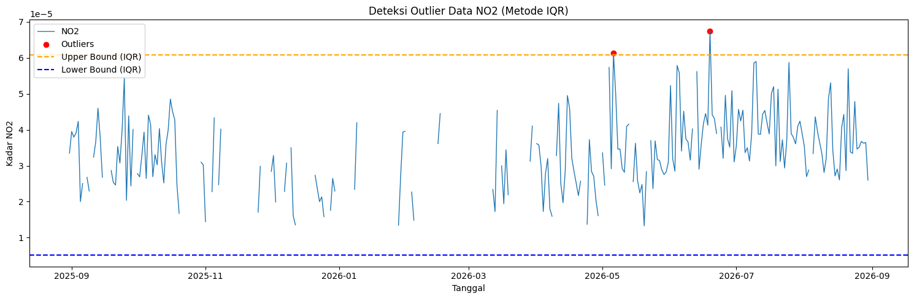
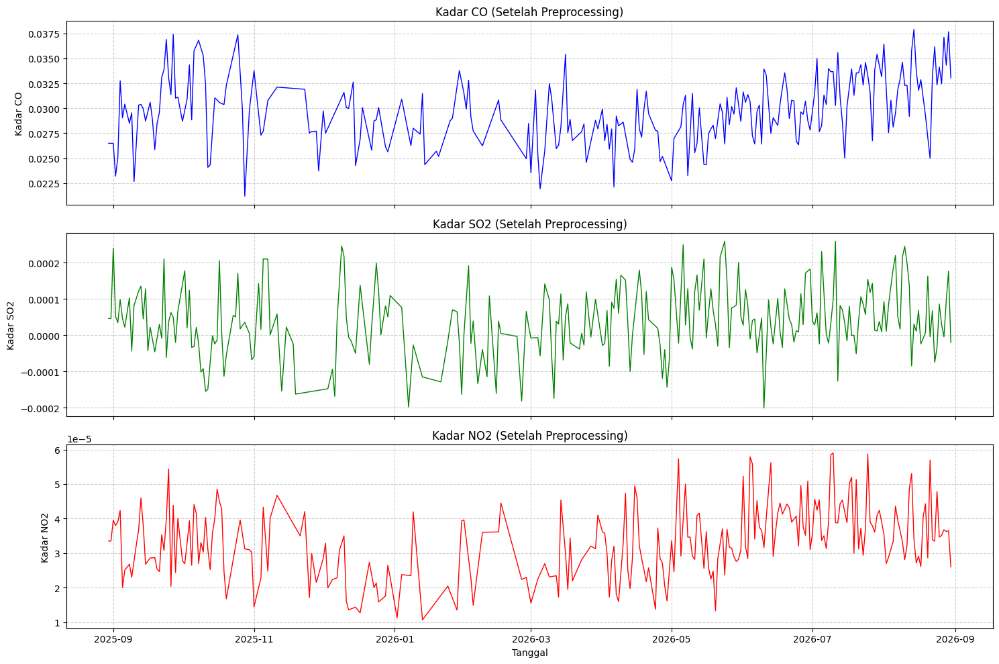
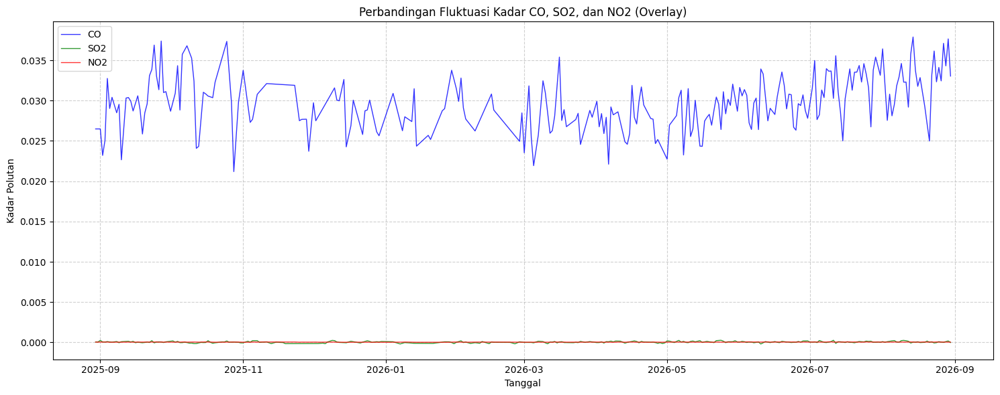

Data Preprocessing dan Ekstraksi Fitur (Interpolasi Polinomial)#
Preprocessing: Penanganan Outlier dan Interpolasi Polinomial#
Notebook Data/polutan/polutan_polinomial.ipynb memproses data harian untuk tiga polutan di wilayah Widang: karbon monoksida (CO), sulfur dioksida (SO2), dan nitrogen dioksida (NO2). Data masukan berasal dari CO_Timeseries.csv, SO2_Timeseries.csv, dan NO2_Timeseries.csv di folder Data/Polutan/. Setiap berkas mempunyai kolom date dan satu kolom konsentrasi polutan.
Outlier ditentukan dengan metode Rentang Interkuartil (IQR). Nilai yang berada di bawah Q1 - 1.5 * IQR atau di atas Q3 + 1.5 * IQR ditandai sebagai nilai kosong (NaN). Notebook kemudian menghitung ulang batas IQR dan mengulang penandaan serta imputasi sampai tidak ada lagi nilai yang dianggap outlier.
Untuk mengisi nilai kosong, notebook menggunakan interpolate(method='polynomial', order=1), kemudian bfill() dan ffill() untuk menangani nilai kosong di tepi deret. Dengan order=1, polinomialnya berderajat satu; interpolasi ini berupa garis lurus terhadap indeks baris. Ini berbeda dari method='time', yang mempertimbangkan jarak waktu pada indeks datetime.
Hasil IQR awal yang tercatat pada output notebook adalah 6 outlier untuk CO, 17 untuk SO2, dan 2 untuk NO2. Hasil tersebut adalah hitungan sebelum proses iteratif. Berkas deret waktu yang tersedia masing-masing memiliki 366 baris dengan tanggal dari 2025-08-30 hingga 2026-08-30.
1. Karbon Monoksida (CO)#
Muat data CO, urutkan berdasarkan tanggal, ubah konsentrasi menjadi numerik, lalu hitung dan visualisasikan batas IQR:
import pandas as pd
import numpy as np
import matplotlib.pyplot as plt
df = pd.read_csv("../../Data/Polutan/CO_Timeseries.csv")
df["date"] = pd.to_datetime(df["date"])
df = df.sort_values("date").reset_index(drop=True)
df["CO"] = pd.to_numeric(df["CO"], errors="coerce")
Q1 = df["CO"].quantile(0.25)
Q3 = df["CO"].quantile(0.75)
IQR = Q3 - Q1
lower_bound = Q1 - 1.5 * IQR
upper_bound = Q3 + 1.5 * IQR
outliers_iqr = df[(df["CO"] < lower_bound) | (df["CO"] > upper_bound)]
print("Jumlah Outlier CO (IQR):", len(outliers_iqr))
plt.figure(figsize=(15, 5))
plt.plot(df["date"], df["CO"], label="CO", linewidth=1)
plt.scatter(
outliers_iqr["date"],
outliers_iqr["CO"],
color="red",
marker="o",
label="Outliers",
)
plt.axhline(upper_bound, color="orange", linestyle="dashed", label="Upper Bound (IQR)")
plt.axhline(lower_bound, color="blue", linestyle="dashed", label="Lower Bound (IQR)")
plt.title("Deteksi Outlier Data CO (Metode IQR)")
plt.xlabel("Tanggal")
plt.ylabel("Kadar CO")
plt.legend()
plt.tight_layout()
plt.show()
Jumlah Outlier CO (IQR): 6

Penanganan outlier dilakukan berulang. Hasilnya disimpan ke CO_Filled_Polynomial.csv:
df["CO_filled"] = df["CO"].copy()
while True:
Q1 = df["CO_filled"].quantile(0.25)
Q3 = df["CO_filled"].quantile(0.75)
IQR = Q3 - Q1
lower_bound = Q1 - 1.5 * IQR
upper_bound = Q3 + 1.5 * IQR
outliers = (df["CO_filled"] < lower_bound) | (df["CO_filled"] > upper_bound)
if not outliers.any():
break
df["CO_filled"] = df["CO_filled"].mask(outliers)
df["CO_filled"] = (
df["CO_filled"].interpolate(method="polynomial", order=1).bfill().ffill()
)
df_co = pd.DataFrame({"date": df["date"], "CO": df["CO_filled"]})
df_co.to_csv("../../Data/Polutan/CO_Filled_Polynomial.csv", index=False)
print("Data CO berhasil diproses dan disimpan ke CO_Filled_Polynomial.csv")
Data CO berhasil diproses dan disimpan ke CO_Filled_Polynomial.csv
2. Sulfur Dioksida (SO2)#
Langkah yang sama diterapkan pada SO2. Perhitungan IQR awal dan visualisasi outlier:
df = pd.read_csv("../../Data/Polutan/SO2_Timeseries.csv")
df["date"] = pd.to_datetime(df["date"])
df = df.sort_values("date").reset_index(drop=True)
df["SO2"] = pd.to_numeric(df["SO2"], errors="coerce")
Q1 = df["SO2"].quantile(0.25)
Q3 = df["SO2"].quantile(0.75)
IQR = Q3 - Q1
lower_bound = Q1 - 1.5 * IQR
upper_bound = Q3 + 1.5 * IQR
outliers_iqr = df[(df["SO2"] < lower_bound) | (df["SO2"] > upper_bound)]
print("Jumlah Outlier SO2 (IQR):", len(outliers_iqr))
plt.figure(figsize=(15, 5))
plt.plot(df["date"], df["SO2"], label="SO2", linewidth=1)
plt.scatter(
outliers_iqr["date"],
outliers_iqr["SO2"],
color="red",
marker="o",
label="Outliers",
)
plt.axhline(upper_bound, color="orange", linestyle="dashed", label="Upper Bound (IQR)")
plt.axhline(lower_bound, color="blue", linestyle="dashed", label="Lower Bound (IQR)")
plt.title("Deteksi Outlier Data SO2 (Metode IQR)")
plt.xlabel("Tanggal")
plt.ylabel("Kadar SO2")
plt.legend()
plt.tight_layout()
plt.show()
Jumlah Outlier SO2 (IQR): 17

Penanganan outlier iteratif dan penyimpanan hasil:
df["SO2_filled"] = df["SO2"].copy()
while True:
Q1 = df["SO2_filled"].quantile(0.25)
Q3 = df["SO2_filled"].quantile(0.75)
IQR = Q3 - Q1
lower_bound = Q1 - 1.5 * IQR
upper_bound = Q3 + 1.5 * IQR
outliers = (df["SO2_filled"] < lower_bound) | (df["SO2_filled"] > upper_bound)
if not outliers.any():
break
df["SO2_filled"] = df["SO2_filled"].mask(outliers)
df["SO2_filled"] = (
df["SO2_filled"].interpolate(method="polynomial", order=1).bfill().ffill()
)
df_so2 = pd.DataFrame({"date": df["date"], "SO2": df["SO2_filled"]})
df_so2.to_csv("../../Data/Polutan/SO2_Filled_Polynomial.csv", index=False)
print("Data SO2 berhasil diproses dan disimpan ke SO2_Filled_Polynomial.csv")
Data SO2 berhasil diproses dan disimpan ke SO2_Filled_Polynomial.csv
3. Nitrogen Dioksida (NO2)#
Perhitungan IQR awal dan visualisasi outlier NO2:
df = pd.read_csv("../../Data/Polutan/NO2_Timeseries.csv")
df["date"] = pd.to_datetime(df["date"])
df = df.sort_values("date").reset_index(drop=True)
df["NO2"] = pd.to_numeric(df["NO2"], errors="coerce")
Q1 = df["NO2"].quantile(0.25)
Q3 = df["NO2"].quantile(0.75)
IQR = Q3 - Q1
lower_bound = Q1 - 1.5 * IQR
upper_bound = Q3 + 1.5 * IQR
outliers_iqr = df[(df["NO2"] < lower_bound) | (df["NO2"] > upper_bound)]
print("Jumlah Outlier NO2 (IQR):", len(outliers_iqr))
plt.figure(figsize=(15, 5))
plt.plot(df["date"], df["NO2"], label="NO2", linewidth=1)
plt.scatter(
outliers_iqr["date"],
outliers_iqr["NO2"],
color="red",
marker="o",
label="Outliers",
)
plt.axhline(upper_bound, color="orange", linestyle="dashed", label="Upper Bound (IQR)")
plt.axhline(lower_bound, color="blue", linestyle="dashed", label="Lower Bound (IQR)")
plt.title("Deteksi Outlier Data NO2 (Metode IQR)")
plt.xlabel("Tanggal")
plt.ylabel("Kadar NO2")
plt.legend()
plt.tight_layout()
plt.show()
Jumlah Outlier NO2 (IQR): 2

Penanganan outlier iteratif dan penyimpanan hasil:
df["NO2_filled"] = df["NO2"].copy()
while True:
Q1 = df["NO2_filled"].quantile(0.25)
Q3 = df["NO2_filled"].quantile(0.75)
IQR = Q3 - Q1
lower_bound = Q1 - 1.5 * IQR
upper_bound = Q3 + 1.5 * IQR
outliers = (df["NO2_filled"] < lower_bound) | (df["NO2_filled"] > upper_bound)
if not outliers.any():
break
df["NO2_filled"] = df["NO2_filled"].mask(outliers)
df["NO2_filled"] = (
df["NO2_filled"].interpolate(method="polynomial", order=1).bfill().ffill()
)
df_no2 = pd.DataFrame({"date": df["date"], "NO2": df["NO2_filled"]})
df_no2.to_csv("../../Data/Polutan/NO2_Filled_Polynomial.csv", index=False)
print("Data NO2 berhasil diproses dan disimpan ke NO2_Filled_Polynomial.csv")
Data NO2 berhasil diproses dan disimpan ke NO2_Filled_Polynomial.csv
4. Visualisasi Gabungan Setelah Preprocessing#
Notebook membaca ketiga berkas hasil dan menampilkan kadar polutan sebagai subplot serta grafik overlay. Grafik overlay membantu membandingkan pola perubahan, tetapi skala masing-masing polutan dapat berbeda.
df_co = pd.read_csv("../../Data/Polutan/CO_Filled_Polynomial.csv")
df_so2 = pd.read_csv("../../Data/Polutan/SO2_Filled_Polynomial.csv")
df_no2 = pd.read_csv("../../Data/Polutan/NO2_Filled_Polynomial.csv")
df_co["date"] = pd.to_datetime(df_co["date"])
df_so2["date"] = pd.to_datetime(df_so2["date"])
df_no2["date"] = pd.to_datetime(df_no2["date"])
fig, axes = plt.subplots(3, 1, figsize=(15, 10), sharex=True)
axes[0].plot(df_co["date"], df_co["CO"], color="blue", linewidth=1)
axes[0].set_title("Kadar CO (Setelah Preprocessing)")
axes[0].set_ylabel("Kadar CO")
axes[0].grid(True, linestyle="--", alpha=0.6)
axes[1].plot(df_so2["date"], df_so2["SO2"], color="green", linewidth=1)
axes[1].set_title("Kadar SO2 (Setelah Preprocessing)")
axes[1].set_ylabel("Kadar SO2")
axes[1].grid(True, linestyle="--", alpha=0.6)
axes[2].plot(df_no2["date"], df_no2["NO2"], color="red", linewidth=1)
axes[2].set_title("Kadar NO2 (Setelah Preprocessing)")
axes[2].set_xlabel("Tanggal")
axes[2].set_ylabel("Kadar NO2")
axes[2].grid(True, linestyle="--", alpha=0.6)
plt.tight_layout()
plt.show()
plt.figure(figsize=(15, 6))
plt.plot(df_co["date"], df_co["CO"], color="blue", label="CO", linewidth=1, alpha=0.8)
plt.plot(df_so2["date"], df_so2["SO2"], color="green", label="SO2", linewidth=1, alpha=0.8)
plt.plot(df_no2["date"], df_no2["NO2"], color="red", label="NO2", linewidth=1, alpha=0.8)
plt.title("Perbandingan Fluktuasi Kadar CO, SO2, dan NO2 (Overlay)")
plt.xlabel("Tanggal")
plt.ylabel("Kadar Polutan")
plt.grid(True, linestyle="--", alpha=0.6)
plt.legend()
plt.tight_layout()
plt.show()


5. Penggabungan Dataset Polutan#
Sebelum ekstraksi fitur, data hasil preprocessing digabung menjadi satu tabel. Berkas gabungan Polutan_Widang_polynomial.csv memiliki kolom date, CO, NO2, dan SO2.
df_co = pd.read_csv("../../Data/Polutan/CO_Filled_Polynomial.csv")
df_no2 = pd.read_csv("../../Data/Polutan/NO2_Filled_Polynomial.csv")
df_so2 = pd.read_csv("../../Data/Polutan/SO2_Filled_Polynomial.csv")
dataframe_merged = pd.DataFrame(
{
"date": df_no2["date"],
"CO": df_co["CO"],
"NO2": df_no2["NO2"],
"SO2": df_so2["SO2"],
}
)
dataframe_merged.to_csv(
"../../Data/Polutan/Polutan_Widang_polynomial.csv",
index=False,
)
print("Data polutan berhasil digabungkan dan disimpan ke Polutan_Widang_polynomial.csv")
Data polutan berhasil digabungkan dan disimpan ke Polutan_Widang_polynomial.csv
Ekstraksi Fitur Deret Waktu (TSFEL)#
Notebook membaca dataset gabungan dan mengekstrak 68 fitur TSFEL untuk setiap polutan. Sebelum ekstraksi, nilai di luar batas IQR kembali ditandai sebagai NaN sebagai pemeriksaan tambahan. Pada tahap tambahan ini, notebook mengisi kekosongan dengan interpolate(method='time'), ffill(), dan bfill(); metode ini berbeda dari interpolasi polinomial orde satu yang digunakan pada preprocessing di atas.
Nama setiap fitur diberi awalan nama polutan. Dengan tiga polutan dan 68 fitur per polutan, keluaran yang diharapkan adalah satu baris dengan 204 kolom, yang disimpan ke Widang_Polynomial.csv.
import inspect
import tsfel.feature_extraction.features as tsfel_features
df = pd.read_csv("../../Data/Polutan/Polutan_Widang_polynomial.csv")
df["date"] = pd.to_datetime(df["date"])
df = df.sort_values("date").reset_index(drop=True)
pollutants = ["NO2", "SO2", "CO"]
fs = 1
FEATURE_LIST = """abs_energy auc autocorr average_power calc_centroid calc_max calc_mean
calc_median calc_min calc_std calc_var dfa distance ecdf ecdf_percentile ecdf_percentile_count
ecdf_slope entropy fundamental_frequency higuchi_fractal_dimension hist_mode human_range_energy
hurst_exponent interq_range kurtosis lempel_ziv lpcc max_frequency max_power_spectrum
maximum_fractal_length mean_abs_deviation mean_abs_diff mean_diff median_abs_deviation
median_abs_diff median_diff median_frequency mfcc mse negative_turning neighbourhood_peaks
petrosian_fractal_dimension pk_pk_distance positive_turning power_bandwidth rms skewness slope
spectral_centroid spectral_decrease spectral_distance spectral_entropy spectral_kurtosis
spectral_positive_turning spectral_roll_off spectral_roll_on spectral_skewness spectral_slope
spectral_spread spectral_variation spectrogram_mean_coeff sum_abs_diff wavelet_abs_mean
wavelet_energy wavelet_entropy wavelet_std wavelet_var zero_cross""".split()
def to_scalar(result):
if isinstance(result, dict) and "values" in result:
result = result["values"]
if isinstance(result, (list, tuple, np.ndarray)):
arr = np.asarray(result, dtype=float)
return float(np.nanmean(arr))
return float(result)
def extract_one(fn_name, signal, fs):
fn = getattr(tsfel_features, fn_name)
params = inspect.signature(fn).parameters
if "fs" in params:
result = fn(signal, fs)
else:
result = fn(signal)
return to_scalar(result)
combined_row = {}
for pollutant in pollutants:
df_poly = df[["date", pollutant]].copy()
df_poly[pollutant] = pd.to_numeric(df_poly[pollutant], errors="coerce")
Q1 = df_poly[pollutant].quantile(0.25)
Q3 = df_poly[pollutant].quantile(0.75)
IQR = Q3 - Q1
lower_bound = Q1 - 1.5 * IQR
upper_bound = Q3 + 1.5 * IQR
df_poly.loc[
(df_poly[pollutant] < lower_bound)
| (df_poly[pollutant] > upper_bound),
pollutant,
] = np.nan
df_clean = df_poly.set_index("date").interpolate(method="time").ffill().bfill()
signal_1d = df_clean[pollutant].astype(float).values
for fn_name in FEATURE_LIST:
feature_key = f"{pollutant}_{fn_name}"
combined_row[feature_key] = extract_one(fn_name, signal_1d, fs)
extracted_features_final = pd.DataFrame([combined_row])
output_filename = "../../Data/Polutan/Widang_Polynomial.csv"
extracted_features_final.to_csv(output_filename, index=False)
print(f"Total fitur yang dihasilkan: {extracted_features_final.shape[1]}")
print(f"File berhasil disimpan sebagai: {output_filename}")
Total fitur yang dihasilkan: 204
File berhasil disimpan sebagai: ../../Data/Polutan/Widang_Polynomial.csv
Fitur TSFEL di atas mencakup karakteristik statistik, temporal, spektral, dan wavelet. Sebagai contoh, calc_mean, calc_std, dan kurtosis merangkum distribusi; mean_abs_diff dan autocorr menggambarkan perubahan serta dependensi urutan; fitur spectral_ dan wavelet_ meringkas karakteristik frekuensi. Nilai hasil masing-masing polutan dapat dibaca pada kolom dengan awalan seperti NO2_, SO2_, dan CO_.
Kesimpulan#
Alur pengolahan dalam notebook adalah:
Membaca deret waktu
CO_Timeseries.csv,SO2_Timeseries.csv, danNO2_Timeseries.csv.Mendeteksi outlier dengan IQR, menandainya sebagai
NaN, dan mengulang pembersihan dengan interpolasi polinomial orde satu sertabfill()danffill().Menyimpan hasil tiap polutan sebagai
CO_Filled_Polynomial.csv,SO2_Filled_Polynomial.csv, danNO2_Filled_Polynomial.csv.Menggabungkan ketiga data menjadi
Polutan_Widang_polynomial.csv.Mengekstrak 68 fitur TSFEL per polutan dan menyimpan hasilnya ke
Widang_Polynomial.csv.
Interpolasi mengisi nilai pada baris yang tersedia dan tidak menambahkan tanggal kalender yang tidak ada. Untuk analisis yang mensyaratkan jarak harian seragam, kelengkapan dan keteraturan tanggal perlu dipastikan secara terpisah.